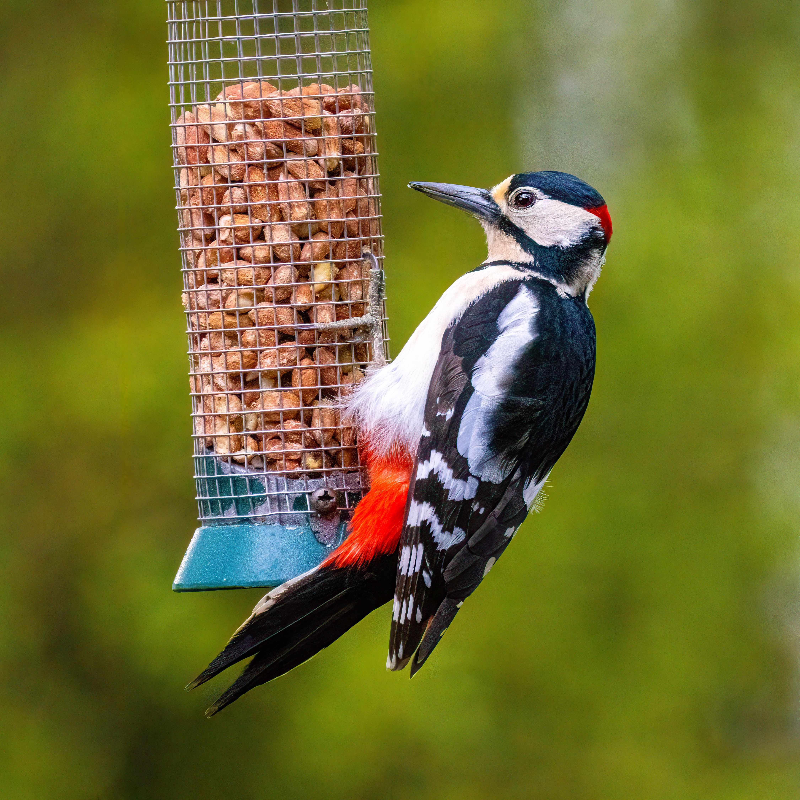

The Great Spotted Woodpecker is a striking black-and-white woodpecker with bold red markings and a strong, chisel-shaped bill. Adults have a black back, white shoulder patches, white underparts, and red markings around the lower belly, while juveniles have a prominent red crown. It is most strongly associated with mature deciduous and mixed woodland, particularly areas containing dead or decaying trees where insects are abundant. It also eats tree seeds, nuts, and occasionally eggs or young birds. Its loud drumming is an important territorial and breeding signal and can often be heard before the bird is seen. Compared with the smaller Lesser Spotted Woodpecker, the Great Spotted Woodpecker has much more extensive black-and-white plumage and stronger red markings. It is also considerably larger than the Middle Spotted Woodpecker and has a different head pattern. Its ability to use garden feeders has helped it become a familiar bird in parts of Europe.